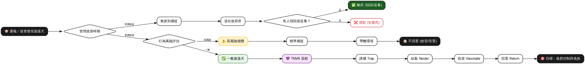

政策概覽
台灣流浪犬管理政策的演進與核心目標
自 2017 年正式實施「零撲殺」政策以來，台灣遊蕩犬管理從傳統的「末端捕捉與移除」，轉向更強調「源頭減量」與「社區共存」的多元治理模式。本網站旨在提供一個清晰、客觀的資訊平台，協助公眾理解複雜的政策邏輯與實務運作。
| 階段 | 核心機制 | 主要特點 |
|---|---|---|
| 2017 以前 | 末端移除 | 收容所滿載時進行人道處理（撲殺） |
| 2017 至今 | 零撲殺時代 | 禁止人道處理，推行 TNVR 與精準捕捉 |
| 未來趨勢 | 源頭治理 | 強化飼主責任、落實晶片登記與家犬絕育 |
零撲殺前：末端移除機制
過去以收容所容量為核心的管理邏輯
無差別捕捉
只要接獲民眾通報或巡查發現，清潔隊或捕犬員即前往捕捉並送往收容所。
公告與等待
進入收容所後公告 12 天，等待原飼主領回或新飼主領養。
人道處理（撲殺）
若逾期未被領養且收容空間不足，則依規定進行安樂死，造成收容所極大壓力。
零撲殺後：精準管理機制
2017 年後轉向行為評估與分流管理
行為風險評估
捕捉後由專業人員評估犬隻是否具有攻擊性、追車等危險行為。
精準捕捉與分流
高風險犬隻：送往收容所長期安置，不回置環境。
一般犬隻：進入 TNVR 程序，結紮後回置原處。
零撲殺挑戰
禁止撲殺後，收容所面臨長期爆滿壓力，需透過提高認養率與源頭絕育來緩解。
TNVR 流程詳解
控制遊蕩犬族群數量的核心手段
T - Trap 誘捕
使用專業誘捕籠或吹箭等方式，在不傷害犬隻的前提下將其捕捉，通常由專業團隊或合作志工執行。
N - Neuter 結紮
由獸醫師進行絕育手術，並進行剪耳標記（男左女右），以利遠端辨識是否已絕育，避免重複捕捉。
V - Vaccinate 疫苗
施打狂犬病疫苗及其他核心疫苗，提升犬隻群體免疫力，降低公共衛生風險。
R - Return 回置
將健康且無攻擊性的犬隻送回原捕捉地點，利用其領域性防止外部未結紮犬隻遷入，達成區域族群穩定。
完整政策流程圖
零撲殺前後完整決策流程一覽（可點擊放大）

橫向捲動以查看完整流程 | 點擊圖片可放大檢視
靜態流程圖（可下載）
高解析度流程圖，適合列印或簡報使用